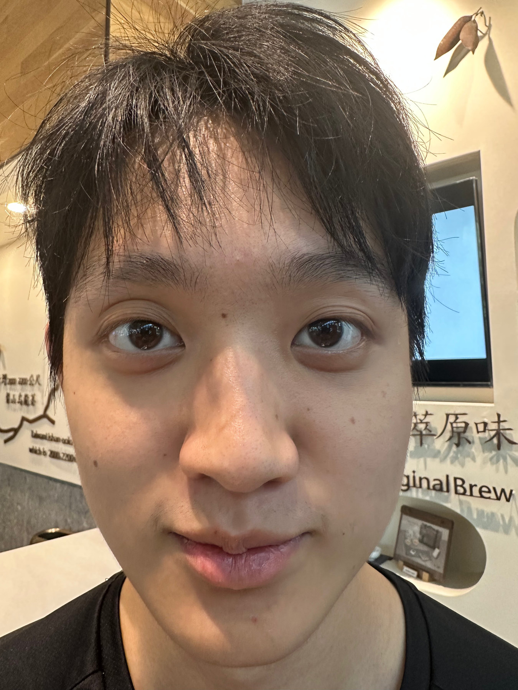
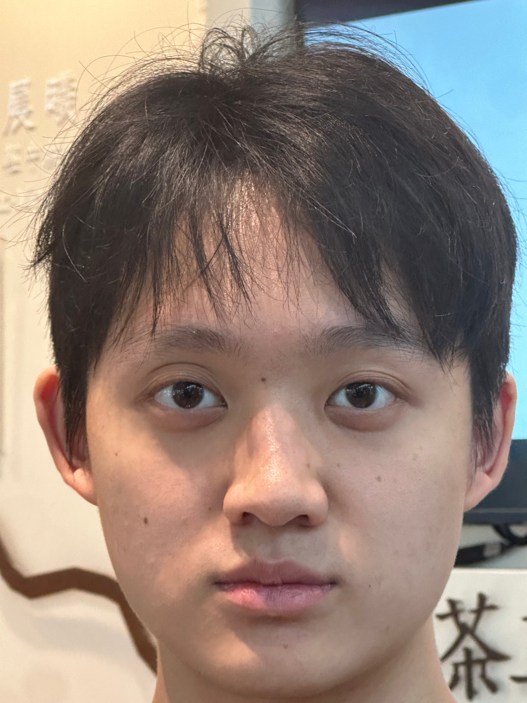
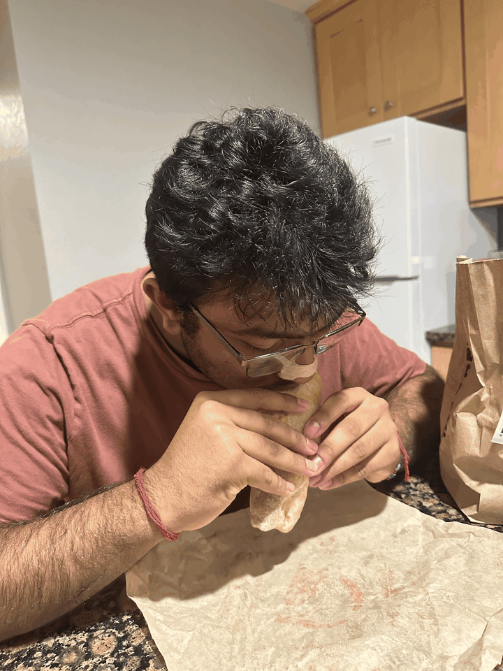

Abstract
For this project, I tested how camera position and focal length change perspective using a portrait, a view of Wheeler Hall, and a dolly zoom. I shot everything on an iPhone 14 Pro with automatic white balance and no flash.
Part 1 Selfie: The Wrong Way vs. the Right Way
I photographed my friend first from close range, then from several feet farther away with a longer focal length. I matched the apparent size of the face as closely as I could so that the change in perspective would be easy to compare.


| Shot | Lens | 35 mm equivalent | Aperture | Exposure | ISO | Digital zoom |
|---|---|---|---|---|---|---|
| Close | 2.22 mm | 24 mm | f/2.2 | 1/60 s | 200 | 1.78× |
| Stepped back | 9 mm | 135 mm | f/2.8 | 1/60 s | 320 | 1.74× |
Observation. The easiest way for me to understand this phenomenon is to imagine rays running from each facial feature to the camera. Up close, the rays from his nose, eyes, and ears fan out at noticeably different angles, so small differences in depth become exaggerated. After I stepped back, those rays were much closer to parallel, so the same depth differences mattered less.
Part 2 Architectural Perspective Compression
For the architectural comparison, I began farther from Wheeler Hall with the camera zoomed in. I then moved closer and widened the view while keeping Wheeler Hall roughly the same size in the frame.
| Shot | Lens | 35 mm equivalent | Aperture | Exposure | ISO | Digital zoom |
|---|---|---|---|---|---|---|
| Far and zoomed | 9 mm | 103 mm | f/2.8 | 1/182 s | 32 | 1.34× |
| Near and wide | 6.86 mm | 48 mm | f/1.78 | 1/880 s | 64 | 1× |
Observation. The same idea from Part 1 shows up in Wheeler Hall. From farther away, the rays from the columns to the camera are closer to parallel, so differences in distance have less effect on their apparent size. From the closer viewpoint, the rays spread out more and the sense of depth becomes much stronger.
Part 3 The Dolly Zoom
I took eight photos while stepping backward and zooming from 24 mm to 164 mm full-frame equivalent. I tried to keep my friend roughly the same size so the kitchen would shift around him.

| Frame | Source | Lens | 35 mm equivalent | Aperture | Exposure | ISO | Digital zoom |
|---|---|---|---|---|---|---|---|
| 1 | IMG_8134 | 6.86 mm | 24 mm | f/1.78 | 1/40 s | 1000 | 1× |
| 2 | IMG_8135 | 6.86 mm | 41 mm | f/1.78 | 1/40 s | 800 | 1.70× |
| 3 | IMG_8136 | 6.86 mm | 60 mm | f/1.78 | 1/30 s | 500 | 1.24× |
| 4 | IMG_8137 | 9 mm | 83 mm | f/2.8 | 1/30 s | 1250 | 1.08× |
| 5 | IMG_8138 | 9 mm | 105 mm | f/2.8 | 1/30 s | 1250 | 1.36× |
| 6 | IMG_8139 | 9 mm | 136 mm | f/2.8 | 1/30 s | 1250 | 1.76× |
| 7 | IMG_8140 | 9 mm | 164 mm | f/2.8 | 1/30 s | 1250 | 2.12× |
| 8 | IMG_8141 | 9 mm | 164 mm | f/2.8 | 1/30 s | 1600 | 2.12× |
Observation. The effect did not come out as well as I had hoped. Since our house is not very large, my friend was pretty close to the background and I could only move back a short distance. That made the background shift less dramatic than it would have been in a larger space. His pose also changes slightly because he kept eating between frames.
Final Reflection
I already knew these effects existed in theory, but it was super cool to see such a clean ablation side by side. Looking at each pair made the perspective changes much easier to notice. This project also gave me a better sense of how hard it is to take good, controlled photos—even these simple comparisons required careful framing, distance, timing, and consistency between shots.